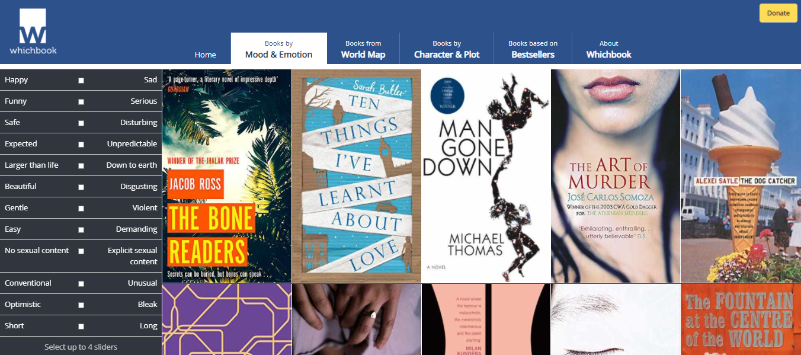

Web Programlama Projesi Grup 11
Proje fikri:Projemizde sitede kullanıcının mooduna göre müzik önerilecek ve chatbox sayesinde aynı müziği dinleyen kullanıcıların konuşabileceği bir platform yapacağız.
Örnek Web SayfasıProje fikri:Üniversite seçimi yapacak öğrenciler için yardımcı bir site yapmayı düşündük. Böylelikle öğrenciler üniversiteleri daha rahatça karşılaştırabilecek ve her üniversitenin web sayfasına ulaşabilecek ve bilgi alabilecek.
Proje fikri:Projedeki amaç Türkiyedeki avmlerin bilgisini kullanarak hangi marka hangisinde var hangisinde yok bulmak. Bu proje ile tek tek avmlerin sitelerini kurcalamak yerine tek bir site ile tüm bilgileri elde edebiliriz.